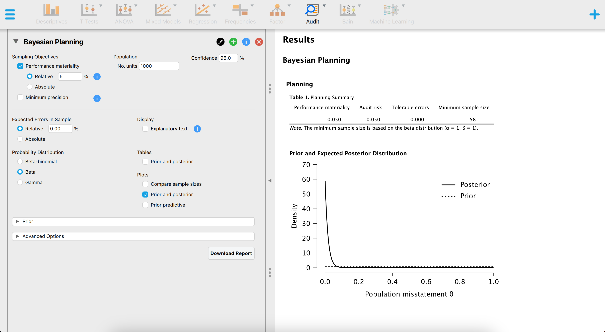
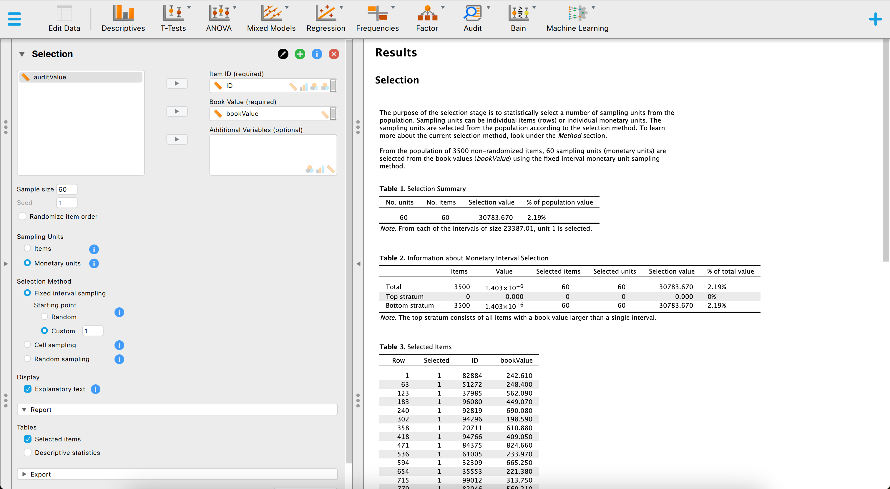
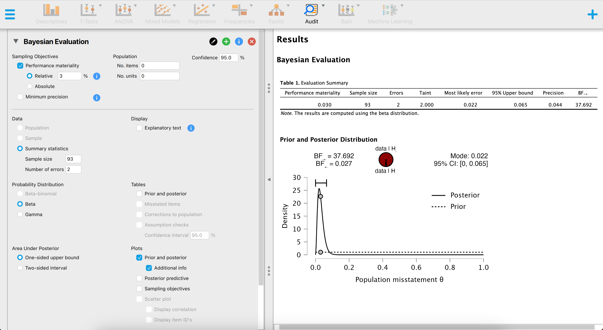

7 Other Software
You are reading the work-in-progress first edition of Statistical Auditing with R. This chapter should be readable but is currently undergoing final polishing.
This chapter discusses other R-related open-source software implementing statistical techniques for audit sampling.
7.1 Graphical User Interfaces
7.1.1 JASP for Audit
JASP for Audit (Derks et al., 2021) is an add-on module for JASP (JASP Team, 2022), based on the jfa package, that facilitates statistical audit sampling. Concretely, it contains graphical user interfaces (GUI’s) for calculating sample sizes, selecting items according to standard audit sampling techniques, and performing inference about the population misstatement on the basis of a data sample or summary statistics of a sample. The module also features Bayesian equivalents of these analyses that enable the user to easily incorporate prior information into the statistical procedure. In all analyses, the Audit module offers explanatory text that helps the auditor in interpreting, explaining, and reporting the analysis. Since JASP for Audit is an R-based GUI around jfa, its functionality can be mapped almost one-on-one to that of the package.

7.1.1.1 Planning
In order to plan a sample for an audit using JASP, the process is similar to using jfa. For example, the screenshot below shows how to plan a minimum sample size for a performance materiality of 5% using a beta(1, 1) prior distribution, while expecting zero misstatements in the sample.

In jfa, these results can be reproduced via the following command:
planning(materiality = 0.05, likelihood = "binomial", prior = TRUE)
#>
#> Bayesian Audit Sample Planning
#>
#> minimum sample size = 58
#> sample size obtained in 59 iterations via method 'binomial' + 'prior'7.1.1.2 Selection
Selecting a sample in JASP for Audit works similar to how you would do it in jfa. For example, the screenshot below shows how to select a sample of 60 monetary units from the BuildIt data set that is included in the package using a fixed interval sampling method with a starting point of 1.
set.seed(1)
data(BuildIt)
result <- selection(data = BuildIt, size = 60, units = "values",
method = "interval", start = 1, values = "bookValue")
head(result$sample)
#> row times ID bookValue auditValue
#> 1 1 1 82884 242.61 242.61
#> 2 63 1 51272 248.40 248.40
#> 3 123 1 37985 562.09 562.09
#> 4 183 1 96080 449.07 449.07
#> 5 240 1 92819 690.08 690.08
#> 6 302 1 94296 198.59 198.59
7.1.1.3 Evaluation
Evaluating a sample in JASP for Audit works similar to how you would do it in jfa. For example, the screenshot below shows how to evaluating a sample of \(n = 60\) containing \(x = 0\) misstatements against a performance materiality of 5% using a beta(1, 1) prior distribution.

In jfa, these results can be reproduced via the following command:
evaluation(materiality = 0.03, method = "binomial", x = 2, n = 93,
prior = TRUE)
#>
#> Bayesian Audit Sample Evaluation
#>
#> data: 2 and 93
#> number of errors = 2, number of samples = 93, taint = 2, BF₁₀ =
#> 37.692
#> alternative hypothesis: true misstatement rate is less than 0.03
#> 95 percent credible interval:
#> 0.0000000 0.0654624
#> most likely estimate:
#> 0.021505
#> results obtained via method 'binomial' + 'prior'7.2 R Packages
7.2.1 MUS
MUS (Prömpers & Guimarães, 2019) is an R package providing sampling and evaluation methods to apply Monetary Unit Sampling during an audit of financial statements. The package is available via CRAN and can be downloaded by running the following code:
install.packages("MUS")Note that the MUS package provides no functionality for Bayesian audit sampling.
7.2.2 audit
audit (Meeden, 2021) is an R package based on the paper by Meeden & Sargent (2007) that can be used to find an upper bound for the total amount of overstatement of assets in a set of accounts and estimating the amount of sales tax owed on a collection of transactions. The package is available via CRAN and can be downloaded by running the following code:
install.packages("audit")Note that the audit package provides limited functionality for evaluating audit samples and has no functionality for planning and selecting audit samples.
7.2.3 samplingbook
samplingbook (Manitz et al., 2021) is an R package based on the book Stichproben: Methoden und praktische Umsetzung mit R (Kauermann & Kuechenhoff, 2010) that focuses on survey sampling and statistical analysis of these samples. The package is available via CRAN and can be downloaded by running the following code:
install.packages("samplingbook")Note that the samplingbook package provides limited functionality for auditing as it mainly focuses on survey sampling.